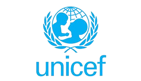
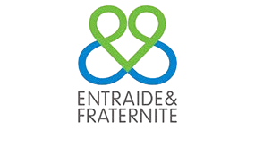
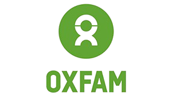

Nos Partenaires




ESPOIR TIERS MONDE œuvre pour améliorer les conditions de vie des populations vulnérables à travers des actions concrètes dans les domaines institutionnel, économique, social, humanitaire et du développement durable.
La lutte efficace contre les grands fléaux qui retardent le développement des pays africains en général et de la Côte d'Ivoire en particulier. Nous développons dans le cœur des enfants et des communautés l'esprit d'amour, d'unité et de partage, véritable soubassement d'un développement durable.
Créer une famille de solidarité et promouvoir le partage, l'amour et l'unité comme fondement du développement durable.
Valoriser le génie des enfants et des communautés pour contribuer à donner la joie et développer l'esprit de partage.
Promouvoir un développement qui respecte l'environnement et assure un avenir meilleur pour les générations futures.
ESPOIR TIERS MONDE réalise des activités dans plusieurs domaines stratégiques pour un impact durable.

Des initiatives concrètes pour répondre aux besoins essentiels des populations.
Un projet festif pour développer l'esprit de partage, d'amour et d'unité chez les enfants dans une ambiance de brassage et d'éducation.
Prise en charge des PVVIH et des OEV avec conseil, dépistage volontaire et soutien psychosocial dans les zones affectées.
Protection et promotion des droits civils, culturels, économiques et sociaux des enfants vulnérables en Côte d'Ivoire.
Dialogue intercommunautaire pour la prévention, la gestion et la résolution des conflits dans les régions du Nord.
Lutte contre les violences faites aux femmes en collaboration avec l'Union Européenne et Terre des Hommes Italie.
Distribution de kits scolaires et renforcement des capacités en partenariat avec l'Université Péléforo GON COULIBALY.
Retour sur nos principales actions et réalisations au fil des années.
Projet "Noël Espoir des Enfants 2012" - Un creuset idéal de brassage, de partage, de prestations et d'éducation dans une ambiance festive pour cultiver les valeurs de développement chez les enfants.
Enquête et action dans la Sous-préfecture de Napié en collaboration avec l'UNADSP pour la prise en charge des PVVIH et des OEV suite aux crises successives qui ont impacté le système de santé.
Focus sur les droits des enfants - Programme spécial pour la promotion et protection des droits civils, culturels, économiques et sociaux des enfants vulnérables, incluant la prise en charge psychosociale, scolaire, médicale et nutritionnelle.
Ensemble, construisons un avenir meilleur pour les communautés vulnérables
Nous soutenirESPOIR TIERS MONDE est présent à Abidjan et à Napié pour vous accompagner.